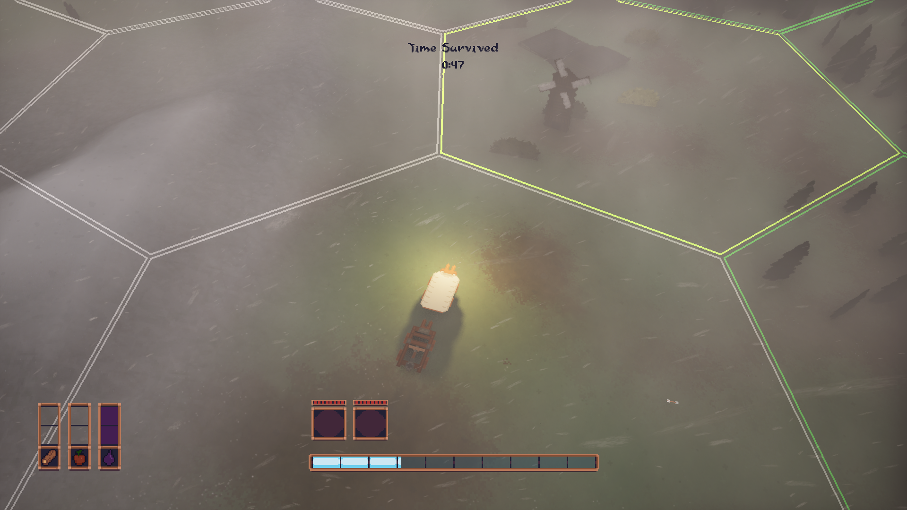
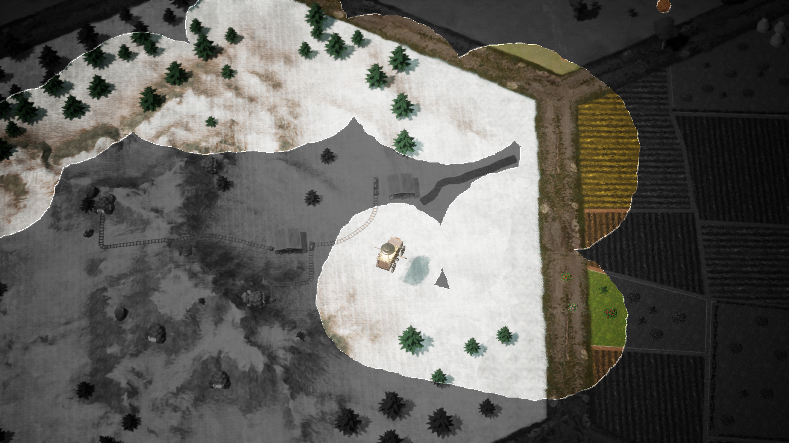
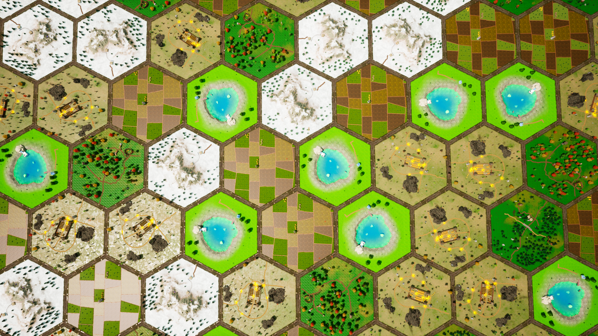
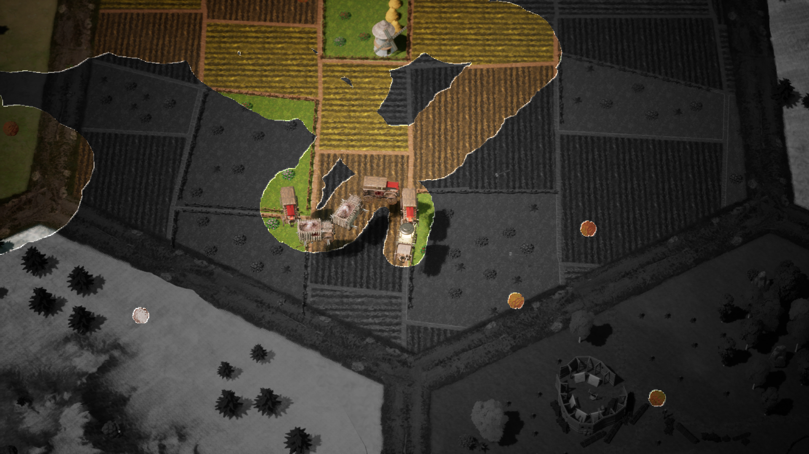
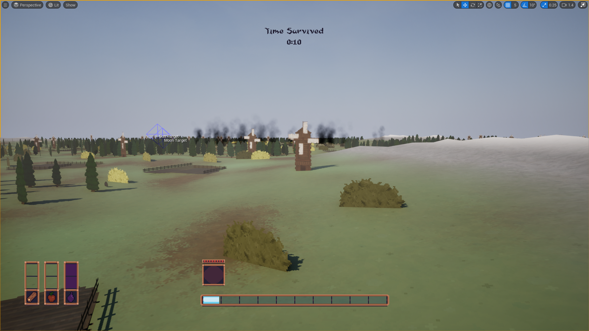
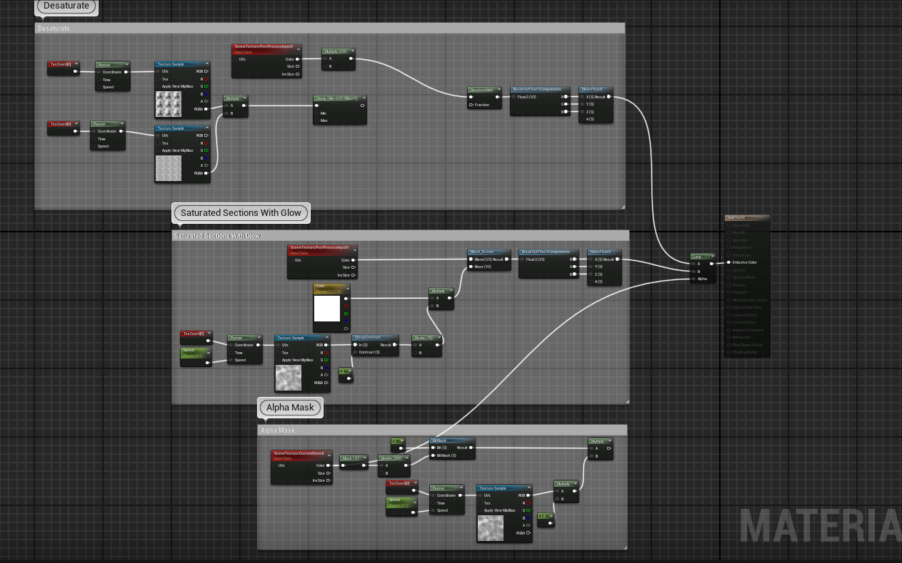

// OVERVIEW
A Snake x Civilization roguelike with Vampire Survivors-style combat, built by a team of five for an undisclosed client. I designed the wagon leveling system — upgrade paths, combat statistics, passive abilities, and the upgrade economy across 10 wagon types and 14 perks — and built the procedural hex world that carried 6 vertical slices through playtests of 10+ players, until the project was sunset due to funding constraints.
// KEY_RESPONSIBILITIES
Designed the wagon leveling system, balancing upgrade paths, combat statistics, passive abilities, and the upgrade economy across 10 wagon types and 14 perks.
Built a hex-based procedural world generator that creates a unique map every playthrough. Used UE5 Level Instances to stream hundreds of tile variations in and out without performance impact, and implemented a custom multi-threaded tile loading system so new hexes are ready before the caravan reaches them. Each hex tile pulls from procedural rulesets governing terrain, asset spawning, and encounter points.
Developed a custom post-process material to visualize the core Gale vs Gloom mechanic — dynamically saturating the environment based on proximity to the player's lantern. The viewport is first globally desaturated; objects tagged as "Gale" are then re-saturated using stencil masking, noise blending, and lerps — communicating danger without any UI.
Directed the full shift from 3D to 2.5D to achieve a more defined and readable art style. Built a custom terrain system generating procedural ground planes with a tile-based structure, and used PaperZD pixel art animation blueprints for wagon attacks and state transitions.
// SYSTEMS_DESIGN
THE LOOP
You lead a caravan of wagons across a procedural hex world. Killing Shadowmen and trading goods at villages earns XP, and every level-up asks one question: add a new wagon to the line, or upgrade one you already have? Each wagon has five upgrade levels, and 14 perks change how the whole caravan plays, like Wheel Pedals (+50% caravan speed) or Lockboxes (Shadowmen steal half as much).

EVERY RESOURCE FEEDS THE CARAVAN
Most hex types yield one resource, and each resource powers a different part of the caravan. Refugees, rescued from ruins, make your wagons work faster: cooldowns scale down to half at full capacity, but refugees need food from the plains or they starve. Galefuel from mountains and colonies sets the size of the Gale, the light around the caravan that damages enemies inside it; run low and the Shadowmen get through. Wood heals 25% of your health for 25 wood, and goods trade for XP.

THE WAGON ROSTER
Ten wagons: six that fight and four that support. Every wagon alternates two upgrade types and ends on a level 5 capstone, so each one levels toward a clear identity. The last column comes from the 2026 rebuild below.
| Wagon | Role | Base | Upgrades, L1 to L5 | L5 DPS vs L0 |
|---|---|---|---|---|
| Celestial | Gale burn | 0.2 dmg / s | Faster cooldown x4, then double damage | 2.0x |
| Arrow | Projectile | 1 dmg / 1 s | +1 projectile, faster cooldown, +1 projectile, faster cooldown, double damage | 8.3x |
| Ballista | Piercing | 1 dmg / 2 s | +1 pierce, faster cooldown (x2), double damage | 2.8x |
| Catapult | Area blast | 2 dmg / 5 s | +50% area, faster cooldown (x2), double damage | 3.1x |
| Brewmaster | Damage pools | 0.2 dmg / 0.5 s | +50% area, faster ticks (x2), double damage | 2.9x |
| Scythed | Contact | 0.25 dmg / 1 s | Faster cooldown, +25% size (x2), double damage | 3.6x |
| Observatory | Line of sight | n/a | +15% sight (x3), camera pan, pointer to nearest colony | n/a |
| Garden | Food | 0.3 food / 5 s | Faster generation, more food per tick (x2), double production | n/a |
| Storage | Storage | n/a | +50% food, water, wood and Galefuel storage, more goods storage | n/a |
| Bunk | Refugee capacity | +15% | Slow arrows, +15% capacity, faster arrows, +15%, double bonus | n/a |
THE HARDEST BALANCE PROBLEM: TILE COUNTS
The biggest balancing problem was how many of each tile the map should hold: villages, lakes, mountains, plains. Tile counts decide how much of every resource exists. With too few plains, refugees starved and died. With too few mountains, the Gale ran out and the Shadowmen could kill you far more easily. The map had to always hold enough of each resource, but never so much that managing them stopped mattering.

FROM 3D TO 2.5D
The first version was fully 3D. We couldn't find a 3D art style that stayed consistent, so the game moved to 2.5D: pixel-art sprites animated with PaperZD on top of the procedural terrain.


REBUILDING THE SHEET IN 2026
I designed these systems before I knew how to build a data-driven balance sheet. Values like "1 Second" or "10% Faster Cooldown" were written as text, so none of it could go straight into Unreal. I rebuilt the whole sheet the way I build them now: one value per cell, units in the column names, one row per upgrade so every table imports as a DataTable, a metrics tab of live formulas, and a list of every gap or ambiguity in the original instead of guessed numbers.
The formulas surfaced something I never saw in the original. Arrow's single-target DPS grows 8.3x from level 0 to level 5, while every other combat wagon grows 2 to 3.6x: two +1 projectile upgrades stack with two cooldown cuts and the Double Damage capstone. That is exactly the kind of outlier a formula-driven sheet is built to catch.
// SCREENSHOT_LOG
